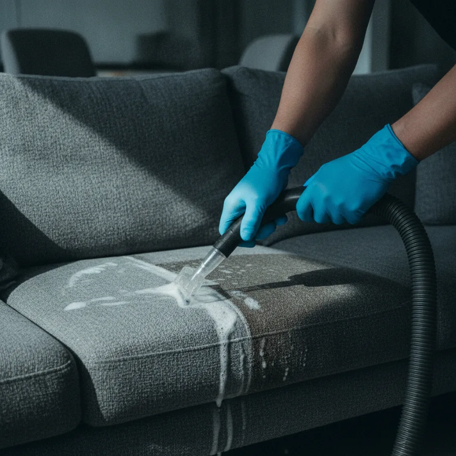

Limpeza
O teu sofá parece novo. E está limpo por dentro.
Injeção-extração profissional: entra água quente com produto, sai a sujidade que a aspiração nunca tirou. Sofás, colchões, cadeiras, tapetes e estofos de automóvel.
- Seco em 4 a 6 horas — voltas a usar no mesmo dia
- Produtos seguros para crianças e animais
- Digo-te à cabeça se a mancha sai ou não
